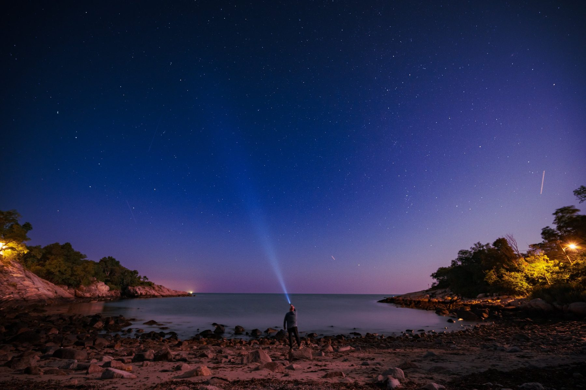

Weddings & engagements
Full-day coverage, engagement sessions, and intimate elopements, documented as they happen.
BEHIND THE LENS · SOUTHERN NEW HAMPSHIRE
For over 25 years I've traveled the world chasing sunrises, sunsets, and the moments worth remembering in between.
Read my story25 years behind the camera

I'm Jerrame, a photographer based in Southern New Hampshire. For over 25 years, I've traveled the world photographing people and landscapes, chasing that beautiful obsession of early morning sunrises and late evening sunsets. Always trying to capture those moments worth remembering.
From dramatic coastlines to quiet exchanges between people, I'm drawn to photographs that make you feel something. My love for landscapes influences how I photograph people, bringing the surroundings, light, and color together without losing sight of who's in front of the camera.
I've shot many weddings, capturing everything from getting ready and walking down the aisle to emotional speeches and questionable dance moves. Some of my favorite photographs happen between the planned moments, when people stop thinking about the camera and simply enjoy themselves.
That's where my personality comes in. I make people laugh. Sometimes with a good joke, sometimes with a terrible one. Either way, that natural smile is what I'm after. You don't need to arrive knowing how to pose. I'll guide you, help you relax, and keep the experience fun.
As a husband and father, I know how quickly life changes and how meaningful these photographs become. Whether it's family portraits, senior photos, an engagement, or your wedding day, I want you to look back and recognize yourselves, your connection, and how it felt to be there.
I offer photography throughout Southern New Hampshire and beyond. After 25 years of traveling with a camera, I'm always up for another adventure.
Bring your people. I'll bring the camera and a few good dad jokes.
Full-day coverage, engagement sessions, and intimate elopements, documented as they happen.
On-location sessions timed to golden hour, for families, seniors, and the people who matter to you.
Every package and add-on, in one place.
LET’S WORK TOGETHER
Tell us what you're planning, your timing, and what matters most to you. We'll start with a conversation.
Start a conversationServing Southern New Hampshire
through the Lakes Region.